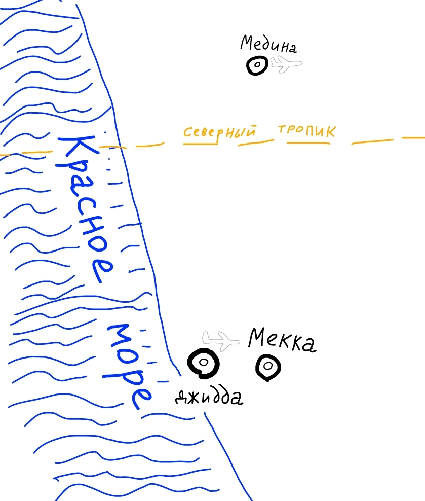

Два священных города
Мекка и Медина
На территории Аравийского полуострова посреди материков нашей планеты расположены два священных города — Мекка и Медина. Эти города посещают миллионы паломников мусульман со всего мира.
Мусульмане во всем мире поворачиваются в сторону Священной мечети Мекки для совершения намазов и молитв.
В Мекке родился и жил до 53-х лет пророк и посланник Аллаха ко всему человечеству Мухаммад сын Абдуллаха из потомства Ибрахима от Исмаиля, мир им благословения от Аллаха.
Потом он переселился в Ясриб который стал называться Мединой.
Коран и мудрость ниспосылались пророку с 40 лет до его смерти в возрасте 63-х лет.
Город Мекка является местом нахождения аль-Масджид аль-Харам (Заповедной мечети) и Каабы посреди неё (дом кубической формы, построенный Ибрахимом и Исмаилем, мир им.
Медина - город пророка в котором Мухаммад, мир ему и приветствия Аллах, после переселения из Мекки построил мечеть (аль-Масджид ан-Набави) и политически независимо возглавил этот регион. В Медине закончилась земная жизнь этого лучшего благословенного человека.
Оба город закрыты для немусульман.
Одним из пяти столпов ислама является хадж — обязательное паломничество в Мекку, которое каждый совершеннолетний мусульманин, обладающий необходимым физическим здоровьем и финансовыми средствами, должен совершить хотя бы раз в жизни. На хадж, который проходит в мусульманский лунный месяц зуль-хиджа, ежегодно собирается более полтора миллиона паломников со всех сторон земного шара. Так же миллионы верующих в течении всего года посещают Мекку для совершения умры — малого паломничества, которое занимает меньше времени и проще хаджа.
Между священными городами Мекка и Медина сегодня функционирует высокоскоростная железная дорога. В Джидде рядом с Меккой и в Медине работают международные аэропорты. Рядом со священными мечетями множество многоэтажных гостиниц. Вокруг самих мечетей большие площади из чистого белого мрамора, который не так сильно нагревается от солнца, как тёмные поверхности.
Северный тропик проходит между Меккой и Мединой, и летом в полдень здесь солнце находится прямо над головой в зените.

Зимой в конце ночи в Медине бывает очень холодно, хотя в полдень достаточно тепло.
Медина более спокойный и более ровный город, чем Мекка.
Сегодня Медина это не только религиозный центр, но и город развитых информационных технологий.
Мекка находится значительно ближе к Красному морю, чем Медина. Медина севернее Мекки. Из центра Медины до центра Мекки пять часов езды на автомобиле.